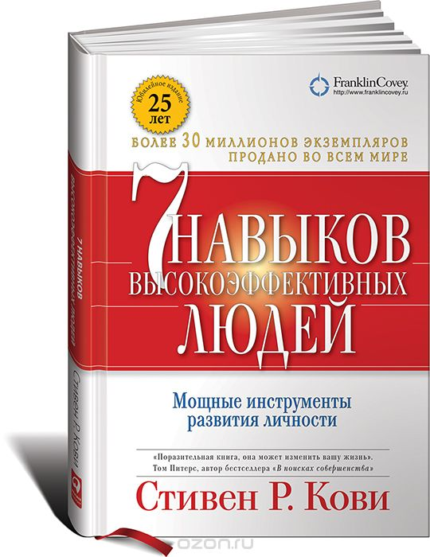

Семь навыков высокоэффективных людей. Мощные инструменты развития личности

Стивен Р. Кови
Описание
Книга излагает системный подход к определению жизненных целей, приоритетов человека, помогает понять себя и сформулировать жизненные цели. Показывает, как их достичь. И главное, показывает, как каждый человек может стать лучше.
Купить
Характеристики
- Автор Стивен Р. Кови
- Количество страниц 400
- Год выпуска 2018
- Цена 200 руб.
- Переплет Твердый переплет
- Язык издания Русский